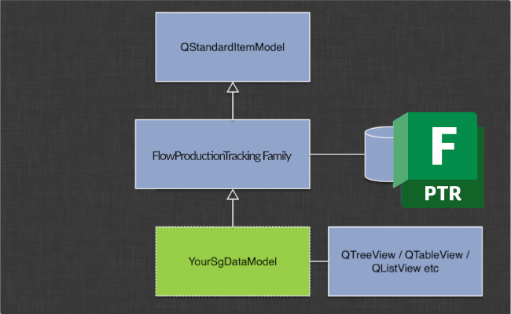

Shotgun Model
Introduction
The shotgun data model helps you build responsive, data rich applications quickly and leverage Qt’s built-in model/view framework

The Shotgun Model is a custom Qt Model specialized for Shotgun Queries. It uses a disk based cache and runs queries asynchronously to Shotgun in the background for performance. In a nut shell, you derive your own model class from it, set up a query, and then hook up your model to a Qt View which will draw the data. The class contains several callbacks and allows for extensive customization, yet tries to shadow and encapsulate a lot of the details.
Why should I use the Shotgun Model?
Using the Shotgun Model means switching to Model/View based programming. While there is perhaps slightly more overhead to get started with this, there are many benefits. The Shotgun Model (and the corresponding delegates and Shotgun View components) is an attempt to bridge this gap and make it quick and painless to get started with Qt Model/View programming.
Qt provides a strong and mature Model/View hierarchy which is robust and easy to work with. If you are not familiar with it, please check the following links:
Technical details: http://qt-project.org/doc/qt-4.8/model-view-programming.html
The benefits with this approach will become evident as you scale your UIs and their complexity. Developing code and tools where the data and the UI is combined will work in simple scenarios but for data rich applications this approach becomes hard to maintain, difficult to reuse and typically scales poorly as the dataset complexity grows. By leveraging Qts built-in functionality, you get access to a mature and well documented toolbox that makes it quick to develop tools:
A Shotgun model instance represents a single shotgun query. With two lines of code you can connect the resultset of such a query with a standard Qt list, tree or table.
The Shotgun model is cached, meaning that all data is fetched in the background in a worker thread. This means that the data in your UI will load up instantly and you never have to wait for shotgun. If the query result is different than the cached result, the view will be updated on the fly as the data arrives.
With Qt you have access to SelectionModels, making it easy to create consistent selection behavior, even across multiple views. With full keyboard support.
With Qt proxy models you can easily create interactive searching and filtering on the client side.
Views and models are optimized and will perform nicely even if you have thousands of items loaded.
Through the shotgun view module, you can easily control the Qt delegates system, making it easy to draw custom UIs for each cell in your view.
Shotgun Model Hello World
A hello world style example would look something like this, assuming this code is inside a toolkit app:
# Import the shotgun_model module from the shotgun utils framework
shotgun_model = tank.platform.import_framework("tk-framework-shotgunutils", "shotgun_model")
# Set up alias
ShotgunModel = shotgun_model.ShotgunModel
# Create a standard Qt Tree View
view = QtGui.QTreeView(parent_widget)
# Set up our data backend
model = shotgun_model.SimpleShotgunModel(parent_widget)
# Tell the view to pull data from the model
view.setModel(model)
# load all assets from Shotgun
model.load_data(entity_type="Asset")
The above code will create a standard Qt tree view of all assets in Shotgun.
Beyond Hello World
The simple setup outlined above could be extended in the following ways:
If you need more control of how the data is being retrieved, consider instead creating your own class and derive from
ShotgunModel. This makes it possible to customize the shotgun data as it arrives from Shotgun, control the hierarchy grouping and many other things.If you want to retrieve results from your view, connect signals to the view’s selection model.
If you want to cull out items from the model, for example only to show items matching a particular search criteria, use a Proxy Model (typically
QSortFilterProxyModel).If you want to control the way items are displayed in the view, consider using the Shotgun delegates module which is part of the Qt widgets framework. For more information, see
WidgetDelegate
Progress Spinner
The model emits several signals at various points in its refresh cycle. If you want a spinner
to pop up to indicate that data is being loaded, simply add a ShotgunModelOverlayWidget
between your view and model, like this:
overlay_widget = tank.platform.import_framework("tk-framework-qtwidgets", "overlay_widget")
# once you have created a view and a model, set up an overlay object to
# track the model's activity. Whenver the model is loading data,
# the overlay will show a spinner.
overlay = overlay_widget.ShotgunModelOverlayWidget(model, view)
If you want to refine how the overlay behaves, simply subclass the class above. This can be useful if you for example want to display a ‘no items found’ message whenever a shotgun query returns zero items.
Data Items
The Shotgun Model derives from QStandardItemModel which is a base model which managed the storage
of model data inside a collection of QStandardItem objects. Each of these objects have a number of
standard property and so called roles, holding various pieces of data such as icons, colors etc.
The Shotgun Model introduces two new standard roles which can be used by both subclassing and calling
code:
ShotgunModel.SG_DATA_ROLEholds the shotgun data associated with an object. In a tree view, only leaf nodes have this data defined - other nodes have it set to None. For leaf nodes, it is a standard shotgun dictionary containing all the items that were returned by the Shotgun query.ShotgunModel.SG_ASSOCIATED_FIELD_ROLEholds the associated field value for a node. This is contained in a dictionary with the keys name and value. For example, for a leaf node this is typically something like{"name": "code", "value": "AAA_123"}. For an intermediate node, it may be something such as{"name": "sg_sequence", "value": {"id": 123, "name": "AAA", "type": "Sequence"} }.
SimpleShotgunModel
Convenience wrapper around the Shotgun model for quick and easy access. Use this when you want
to prototype data modeling or if your are looking for a simple flat data set reflecting a
shotgun query. All you need to do is to instantiate the class (typically once, in your constructor)
and then call SimpleShotgunModel.load_data() to
specify which shotgun query to load up in the model. Subsequently call
load_data() whenever you
wish to change the Shotgun query associated with the model.
This class derives from ShotgunModel so all the
customization methods available in the
normal ShotgunModel can also be subclassed from this class.
- class shotgun_model.SimpleShotgunModel(parent, bg_task_manager=None)[source]
Bases:
ShotgunModelConvenience wrapper around the Shotgun model for quick and easy access.
Use this when you want to prototype data modeling or if your are looking for a simple flat data set reflecting a shotgun query. All you need to do is to instantiate the class (typically once, in your constructor) and then call
load_data()to specify which shotgun query to load up in the model. Subsequently callload_data()whenever you wish to change the Shotgun query associated with the model.This class derives from
ShotgunModelso all the customization methods available in the normalShotgunModelcan also be subclassed from this class.- Parameters:
parent (
QWidget) – QWidget which this model will be parented under.bg_task_manager (
BackgroundTaskManager) – Background task manager to use for any asynchronous work. If this is None then a task manager will be created as needed.
- load_data(entity_type, filters=None, fields=None, order=None, limit=None, columns=None, additional_filter_presets=None, editable_columns=None)[source]
Loads shotgun data into the model, using the cache if possible. The model is not nested and the first field that is specified via the fields parameter (
codeby default) will be used as the default name for all model items.- Parameters:
entity_type – Shotgun Entity Type to load data for
filters – Shotgun API find-style filter list. If no list is specified, all records for the given entity type will be retrieved.
fields – List of Shotgun fields to retrieve. If not spefified, the ‘code’ field will be retrieved.
order – Order clause for the Shotgun data. Standard Shotgun API syntax. Note that this is an advanced parameter which is meant to be used in subclassing only. The model itself will be ordered by its default display name, and if any other type of ordering is desirable, use for example a QProxyModel to handle this. However, knowing in which order results will arrive from Shotgun can be beneficial if you are doing grouping, deferred loading and aggregation of data as part of your subclassed implementation.
limit – Limit the number of results returned from Shotgun. In conjunction with the order parameter, this can be used to effectively cap the data set that the model is handling, allowing a user to for example show the twenty most recent notes or similar.
columns (list) – List of Shotgun fields names to use to populate the model columns
additional_filter_presets – List of Shotgun filter presets to apply, e.g.
[{"preset_name":"LATEST","latest_by":"BY_PIPELINE_STEP_NUMBER_AND_ENTITIES_CREATED_AT"}]editable_columns (list) – A subset of
columnsthat will be editable in views that use this model.
ShotgunEntityModel
Another convenience wrapper around the ShotgunModel. This model is useful when you
want to represent a tree view of Sequences, Shots or Assets. By default, the model will
associate standard dark-style Shotgun entity type icons to items in the list.
- class shotgun_model.ShotgunEntityModel(entity_type, filters, hierarchy, fields, parent, download_thumbs=False, schema_generation=0, bg_load_thumbs=True, bg_task_manager=None)[source]
Bases:
ShotgunModelA model that contains a hierarchy of Shotgun entity data and sets the icon for each item to the icon for the entity type if available.
For Step entities, the icon will be a colour swatch based on the Step color field
- Parameters:
entity_type – The type of the entities that should be loaded into this model.
filters – A list of filters to be applied to entities in the model - these will be passed to the Shotgun API find() call when populating the model
hierarchy – List of Shotgun fields that will be used to define the structure of the items in the model.
fields – List of Shotgun fields to populate the items in the model with. These will be passed to the Shotgun API find() call when populating the model.
parent (
QWidget) – Parent QObject.download_thumbs – Boolean to indicate if this model should attempt to download and process thumbnails for the downloaded data.
schema_generation – Schema generation index. If you are changing the format of the data you are retrieving from Shotgun, and therefore want to invalidate any cache files that may already exist in the system, you can increment this integer.
bg_load_thumbs – If set to True, thumbnails will be loaded in the background.
bg_task_manager (
BackgroundTaskManager) – Background task manager to use for any asynchronous work. If this is None then a task manager will be created as needed.
- get_entity_icon(entity_type)[source]
Convenience method. Retrieve the icon for the specified entity type if available.
- Parameters:
entity_type – The entity type to retrieve the icon for
- Returns:
A QIcon if an icon was found for the specified entity type, otherwise None.
- get_entities(item)[source]
Get entities for the current item by traversing up the tree and pulling entity information from each item if possible
- Parameters:
item (
QStandardItem) – The item to find entities for.- Returns:
A list of Shotgun entity dictionaries in the order they were found starting from the specified item. Each dictionary will contain all the entity information stored by the model which is usually determined by the list of fields passed during construction plus name/code, type and id.
For non-leaf items that represent Shotgun entities, the dictionary will typically just contain name, type and id.
- get_entity(item)[source]
Get the Shotgun entity details for the specified model item.
- Parameters:
item (
QStandardItem) – The item to retrieve the entity details for.- Returns:
A Shotgun entity dictionary for the item if it represents an entity, otherwise None. The dictionary will contain all the entity information stored by the model which is usually determined by the list of fields passed during construction plus name/code, type and id.
ShotgunModel
A Qt Model representing a Shotgun query.
This class implements a standard QAbstractItemModel specialized to hold the contents
of a particular Shotgun query. It is cached and refreshes its data asynchronously.
The model can either be a flat list or a tree. This is controlled by a grouping parameter which works just like the Shotgun grouping. For example, if you pull in assets grouped by asset type, you get a tree of data with intermediate data types for the asset types. The leaf nodes in this case would be assets.
- class shotgun_model.ShotgunModel(parent, download_thumbs=True, schema_generation=0, bg_load_thumbs=True, bg_task_manager=None)[source]
A Qt Model representing a Shotgun query.
This class implements a standard
QAbstractItemModelspecialized to hold the contents of a particular Shotgun query. It is cached and refreshes its data asynchronously.In order to use this class, you normally subclass it and implement certain key data methods for setting up queries, customizing etc. Then you connect your class to a
QAbstractItemViewof some sort which will display the result. If you need to do manipulations such as sorting or filtering on the data, connect a proxy model (typicallyQSortFilterProxyModel) between your class and the view.- Parameters:
parent (
QWidget) – Parent object.download_thumbs – Boolean to indicate if this model should attempt to download and process thumbnails for the downloaded data.
schema_generation – Schema generation number. Advanced parameter. If your shotgun model contains logic in subclassed methods that modify the shotgun data prior to it being put into the cache system that the ShotgunModel maintains, you can use this option to ensure that different versions of the code access different caches. If you change your custom business logic around and update the generation number, both new and old versions of the code will work correctly against the cached data.
bg_load_thumbs – If set to True, thumbnails will be loaded in the background.
bg_task_manager (
BackgroundTaskManager) – Background task manager to use for any asynchronous work. If this is None then a task manager will be created as needed.
Loading & Refreshing the Data
These methods are used by subclasses to define the Shotgun query that loads and caches the model items and refreshes them once cached.
- _load_data(entity_type, filters, hierarchy, fields, order=None, seed=None, limit=None, columns=None, additional_filter_presets=None, editable_columns=None)[source]
This is the main method to use to configure the model. You basically pass a specific find query to the model and it will start tracking this particular set of filter and hierarchy parameters.
Any existing data contained in the model will be cleared.
This method will not call the Shotgun API. If cached data is available, this will be immediately loaded (this operation is very fast even for substantial amounts of data).
If you want to refresh the data contained in the model (which you typically want to), call the
_refresh_data()method.# Example call from a subclass of ShotgunModel that displays assets. # Additional "code" and " description" columns will be displayed, # and the "description" column will be editable. self._load_data( "Asset", # entity_type [], # filters ["sg_asset_type", "code"], # hierarchy ["description"], # fields columns=["code", "description"], # additional columns to display editable_columns=["description"], )
- Parameters:
entity_type – Shotgun entity type to download
filters – List of Shotgun filters. Standard Shotgun syntax. Passing None instead of a list of filters indicates that no shotgun data should be retrieved and no API calls will be made.
hierarchy – List of grouping fields. These should be names of Shotgun fields. If you for example want to create a list of items, the value
["code"]will be suitable. This will generate a data model which is flat and where each item’s default name is the Shotgun name field. If you want to generate a tree where assets are broken down by asset type, you could instead specify["sg_asset_type", "code"].fields – Fields to retrieve from Shotgun (in addition to the ones specified in the hierarchy parameter). Standard Shotgun API syntax. If you specify None for this parameter, Shotgun will not be called when the _refresh_data() method is being executed.
order – Order clause for the Shotgun data. Standard Shotgun API syntax. Note that this is an advanced parameter which is meant to be used in subclassing only. The model itself will be ordered by its default display name, and if any other type of ordering is desirable, use for example a QProxyModel to handle this. However, knowing in which order results will arrive from Shotgun can be beneficial if you are doing grouping, deferred loading and aggregation of data as part of your subclassed implementation, typically via the
_before_data_processing()method.seed – Advanced parameter. With each shotgun query being cached on disk, the model generates a cache seed which it is using to store data on disk. Since the cache data on disk is a reflection of a particular shotgun query, this seed is typically generated from the various query and field parameters passed to this method. However, in some cases when you are doing advanced subclassing, for example when you are culling out data based on some external state, the model state does not solely depend on the shotgun query parameters. It may also depend on some external factors. In this case, the cache seed should also be influenced by those parameters and you can pass an external string via this parameter which will be added to the seed.
limit – Limit the number of results returned from Shotgun. In conjunction with the order parameter, this can be used to effectively cap the data set that the model is handling, allowing a user to for example show the twenty most recent notes or similar.
columns (list) – If columns is specified, then any leaf row in the model will have columns created where each column in the row contains the value for the corresponding field from columns. This means that the data from the loaded entity will be available field by field. Subclasses can modify this behavior by overriding _get_additional_columns.
additional_filter_presets – List of Shotgun filter presets to apply, e.g.
[{"preset_name":"LATEST","latest_by":"BY_PIPELINE_STEP_NUMBER_AND_ENTITIES_CREATED_AT"}]editable_columns (list) – A subset of
columnsthat will be editable in views that use this model.
- Returns:
True if cached data was loaded, False if not.
- _refresh_data()[source]
Rebuilds the data in the model to ensure it is up to date. This call is asynchronous and will return instantly. The update will be applied whenever the data from Shotgun is returned.
If the model is empty (no cached data) no data will be shown at first while the model fetches data from Shotgun.
As soon as a local cache exists, data is shown straight away and the shotgun update happens silently in the background.
If data has been added, this will be injected into the existing structure. In this case, the rest of the model is intact, meaning that also selections and other view related states are unaffected.
If data has been modified or deleted, a full rebuild is issued, meaning that all existing items from the model are removed. This does affect view related states such as selection.
- ensure_data_is_loaded(index=None)[source]
Recursively processes the model and ensures that all data has been loaded into the model.
Beginning with v5, the Shotgun model defer loads its data into the model for optimal performance. Normally, this is not an issue - the data is typically requested prior to a user expanding a tree node in a view. In some cases, however, it is necessary to pre-fetch parts of the tree. One example of this is if you want to perform filtering via a
QSortFilterProxyModel. Please note that for large data sets, this operation may be slow.New in version 5.0.0.
- Parameters:
index (
QModelIndex) – Model index for which to recursively load data. If set to None, the entire tree will be loaded.
- destroy()
Call this method prior to destroying this object.
Base implementation ensures the data worker is stopped and calls
clear()on the model.
- hard_refresh()
Clears any caches on disk, then refreshes the data.
- is_data_cached()
Determine if the model has any cached data.
- Returns:
Trueif cached data exists for the model,Falseotherwise.
Customizing the Model Items
The following methods can be used by subclasses to customize the model and the information it displays when attached to a view.
- _before_data_processing(data)
Called just after data has been retrieved from Shotgun but before any processing takes place.
Note
You can subclass this if you want to perform summaries, calculations and other manipulations of the data before it is passed on to the model class.
- Parameters:
data – a shotgun dictionary, as retunrned by a CRUD SG API call.
- Returns:
should return a shotgun dictionary, of the same form as the input.
- _finalize_item(item)
Called whenever an item is fully constructed, either because a shotgun query returned it or because it was loaded as part of a cache load from disk.
Note
You can subclass this if you want to run post processing on the data as it is arriving. For example, if you are showing a list of task statuses in a filter view, you may want to remember which statuses a user had checked and unchecked the last time he was running the tool. By subclassing this method you can easily apply those settings before items appear in the UI.
- Parameters:
item –
QStandardItemthat is about to be added to the model. This has been primed with the standard settings that the ShotgunModel handles.
- _get_additional_columns(primary_item, is_leaf, columns)[source]
Called when an item is about to be inserted into the model, to get additional items to be included in the same row as the specified item. This provides an opportunity for subclasses to create one or more additional columns for each item in the model.
Note that this method is always called before inserting an item, even when loading from the cache. Any data that is expensive to compute or query should be added to the ShotgunStandardItem in _populate_item, since column data is not cached. Also note that item population methods (_populate_item, _populate_thumbnail, etc) will not be called on the return columns.
This method should return a list of QStandardItems, one for each additional column. The original ShotgunStandardItem is always the first item in each row and should NOT be included in the returned list. Any empty value returned by this method is guaranteed to be treated as an empty list (i.e. you may return None).
This method is called after _finalize_item.
- Parameters:
primary_item –
QStandardItemthat is about to be added to the modelis_leaf – boolean that is True if the item is a leaf item
columns – list of Shotgun field names requested as the columns from _load_data
- Returns:
list of
QStandardItem
- _get_additional_column_headers(entity_type, columns)[source]
Called to set the headers for the additional columns requested from _load_data.
- Parameters:
entity_type – type name of the entity the columns are for
columns – list of Shotgun field names requested as the columns from _load_data
- Returns:
list of strings to use as the headers
- _get_columns(item, is_leaf)[source]
Returns a row (list of QStandardItems) given an initial QStandardItem. The item itself is always the first item in the row, but additional columns may be appended.
- Parameters:
item – A
QStandardItemthat is associated with this model.is_leaf – A boolean indicating if the item is a leaf item or not
- Returns:
A list of
QStandardItems
- _item_created(item)[source]
Called when an item is created, before it is added to the model.
Warning
This base class implementation must be called in any subclasses overriding this behavior. Failure to do so will result in unexpected behavior.
This base class implementation handles storing item lookups for efficiency as well as to prevent issues with garbage collection.
- Parameters:
item (
QStandardItem) – The item that was just created.
- _load_external_data()
Called whenever the model needs to be rebuilt from scratch. This is called prior to any shotgun data is added to the model.
Note
You can subclass this to add custom data to the model in a very flexible fashion. If you for example are loading published files from Shotgun, you could use this to load up a listing of files on disk, resulting in a model that shows both published files and local files. External data will not be cached by the ShotgunModel framework.
- Returns:
list of
QStandardItem
- _populate_default_thumbnail(item)
Called whenever an item is constructed and needs to be associated with a default thumbnail. In the current implementation, thumbnails are not cached in the same way as the rest of the model data, meaning that this method is executed each time an item is constructed, regardless of if it came from an asynchronous shotgun query or a cache fetch.
The purpose of this method is that you can subclass it if you want to ensure that items have an associated thumbnail directly when they are first created.
Later on in the data load cycle, if the model was instantiated with the download_thumbs parameter set to True, the standard Shotgun
imagefield thumbnail will be automatically downloaded for all items (or picked up from local cache if possible).- Parameters:
item –
QStandardItemthat is about to be added to the model. This has been primed with the standard settings that the ShotgunModel handles.
- _populate_item(item, sg_data)
Whenever an item is downloaded from Shotgun, this method is called. It allows subclasses to intercept the construction of a
QStandardItemand add additional metadata or make other changes that may be useful. Nothing needs to be returned.This method is called before the item is added into the model tree. At the point when the item is added into the tree, various signals will fire, informing views and proxy models that a new item has been added. This methods allows a subclassing object to add custom data prior to this.
- Parameters:
item –
QStandardItemthat is about to be added to the model.sg_data – Shotgun data dictionary that was received from Shotgun.
- _populate_thumbnail(item, field, path)
Called whenever the real thumbnail for an item exists on disk. The following execution sequence typically happens:
QStandardItemis created, either through a cache load from disk or from a payload coming from the Shotgun API.After the item has been set up with its associated Shotgun data,
_populate_default_thumbnail()is called, allowing client code to set up a default thumbnail that will be shown while potential real thumbnail data is being loaded.The model will now start looking for the real thumbail.
If the thumbnail is already cached on disk,
_populate_thumbnail()is called very soon.If there isn’t a thumbnail associated,
_populate_thumbnail()will not be called.If there isn’t a thumbnail cached, the model will asynchronously download the thumbnail from Shotgun and then (after some time) call
_populate_thumbnail().
This method will be called for standard thumbnails if the model has been instantiated with the download_thumbs flag set to be true. It will be called for items which are associated with shotgun entities (in a tree data layout, this is typically leaf nodes). It will also be called once the data requested via _request_thumbnail_download() arrives.
This method makes it possible to control how the thumbnail is applied and associated with the item. The default implementation will simply set the thumbnail to be icon of the item, but this can be altered by subclassing this method.
- Parameters:
item –
QStandardItemwhich is associated with the given thumbnailfield – The Shotgun field which the thumbnail is associated with.
path – A path on disk to the thumbnail. This is a file in jpeg format.
- _populate_thumbnail_image(item, field, image, path)
Similar to
_populate_thumbnail()but this method is called instead when the bg_load_thumbs parameter has been set to true. In this case, no loading of thumbnail data from disk is necessary - this has already been carried out async and is passed in the form of a QImage object.For further details, see
_populate_thumbnail()- Parameters:
item –
QStandardItemwhich is associated with the given thumbnailfield – The Shotgun field which the thumbnail is associated with.
image – QImage object with the thumbnail loaded
path – A path on disk to the thumbnail. This is a file in jpeg format.
- _request_thumbnail_download(item, field, url, entity_type, entity_id)
Request that a thumbnail is downloaded for an item. If a thumbnail is successfully retrieved, either from disk (cached) or via shotgun, the method _populate_thumbnail() will be called. If you want to control exactly how your shotgun thumbnail is to appear in the UI, you can subclass this method. For example, you can subclass this method and perform image composition prior to the image being added to the item object.
Note
This is an advanced method which you can use if you want to load thumbnail data other than the standard ‘image’ field. If that’s what you need, simply make sure that you set the download_thumbs parameter to true when you create the model and standard thumbnails will be automatically downloaded. This method is either used for linked thumb fields or if you want to download thumbnails for external model data that doesn’t come from Shotgun.
- Parameters:
item –
QStandardItemwhich belongs to this modelfield – Shotgun field where the thumbnail is stored. This is typically
imagebut can also for example besg_sequence.Sequence.image.url – thumbnail url
entity_type – Shotgun entity type
entity_id – Shotgun entity id
- _set_tooltip(item, sg_item)[source]
Called when an item is created.
Note
You can subclass this if you want to set your own tooltip for the model item. By default, the SG_ASSOCIATED_FIELD_ROLE data is retrieved and the field name is used to determine which field to pick tooltip information from.
For example,
{ "type": "Task", "entity": { # (1) Tooltip becomes "Asset 'Alice'" "sg_asset_type": "Character", # (2) Tooltip becomes "Asset Type 'Character'" "type": "Asset", "code": "Alice" }, "content": "Art" # (3) Tooltip becomes "Task 'Art'" }
1) If the field is an entity (e.g. entity), then the display name of that entity’s type will be used.
2) If the field is part of a sub-entity (e.g entity.Asset.sg_asset_type), the display name of the sub-entity’s type followed by a space and the sub-entity’s field display name will be used.
3) If the field is part of an entity and not an entity field(e.g. content), the display name of the entity’s type will be used.
In all cases, the string ends with the quoted name of the ShotgunStandardItem.
- Parameters:
item – Shotgun model item that requires a tooltip.
sg_item – Dictionary of the entity associated with the Shotgun model item.
Instance Methods
- property entity_ids
Returns a list of entity ids that are part of this model.
- item_from_entity(entity_type, entity_id)[source]
Returns a
QStandardItembased on entity type and entity id. Returns none if not found.- Parameters:
entity_type – Shotgun entity type to look for
entity_id – Shotgun entity id to look for
- Returns:
QStandardItemor None if not found
- index_from_entity(entity_type, entity_id)[source]
Returns a QModelIndex based on entity type and entity id Returns none if not found.
- Parameters:
entity_type – Shotgun entity type to look for
entity_id – Shotgun entity id to look for
- Returns:
QModelIndexor None if not found
- get_filters(item)[source]
Returns a list of Shotgun filters representing the given item. This is useful if you are trying to determine how intermediate leaf nodes partition leaf node data.
For example, if you have created a hierarchical model for a Shot listing:
hierarchy: [sg_sequence, sg_status, code]
The Shotgun model will group the data by sequence, then by status, then the leaf nodes will be the shot names. If you execute the get_filters() method on a sequence level tree node, it may return:
[ ['sg_sequence', 'is', {'type': 'Sequence', 'id': 123, 'name': 'foo'}] ]
If you execute the get_filters() on a status node in the tree, it may return:
[ ['sg_sequence', 'is', {'type': 'Sequence', 'id': 123, 'name': 'foo'}], ['sg_status', 'is', 'ip'] ]
- Parameters:
item – One of the
QStandardItemitems that are associated with this model.- Returns:
standard shotgun filter list to represent that item
- get_entity_type()[source]
Returns the Shotgun Entity type associated with this model.
- Returns:
Shotgun entity type string (e.g. ‘Shot’, ‘Asset’ etc).
- get_additional_column_fields()[source]
Returns the fields for additional columns and their associated column in the model.
- Returns:
A list of dictionaries with the following keys: “field”: the requested additional field for the column “column_idx”: the column number in the model associated with the additional field
- appendRow(self, item: PySide2.QtGui.QStandardItem) None
- appendRow(self, items: Sequence[PySide2.QtGui.QStandardItem]) None
- beginMoveColumns(self, sourceParent: PySide2.QtCore.QModelIndex, sourceFirst: int, sourceLast: int, destinationParent: PySide2.QtCore.QModelIndex, destinationColumn: int) bool
- beginMoveRows(self, sourceParent: PySide2.QtCore.QModelIndex, sourceFirst: int, sourceLast: int, destinationParent: PySide2.QtCore.QModelIndex, destinationRow: int) bool
- buddy(self, index: PySide2.QtCore.QModelIndex) PySide2.QtCore.QModelIndex
- canDropMimeData(self, data: PySide2.QtCore.QMimeData, action: PySide2.QtCore.Qt.DropAction, row: int, column: int, parent: PySide2.QtCore.QModelIndex) bool
- changePersistentIndex(self, from_: PySide2.QtCore.QModelIndex, to: PySide2.QtCore.QModelIndex) None
- checkIndex(self, index: PySide2.QtCore.QModelIndex, options: PySide2.QtCore.QAbstractItemModel.CheckIndexOptions = Instance(PySide2.QtCore.QAbstractItemModel.CheckIndexOptions.NoOption)) bool
- static connect(arg__1: PySide2.QtCore.QObject, arg__2: bytes, arg__3: Callable, type: PySide2.QtCore.Qt.ConnectionType = PySide2.QtCore.Qt.ConnectionType.AutoConnection) bool
- static connect(self, arg__1: bytes, arg__2: Callable, type: PySide2.QtCore.Qt.ConnectionType = PySide2.QtCore.Qt.ConnectionType.AutoConnection) bool
- static connect(self, arg__1: bytes, arg__2: PySide2.QtCore.QObject, arg__3: bytes, type: PySide2.QtCore.Qt.ConnectionType = PySide2.QtCore.Qt.ConnectionType.AutoConnection) bool
- static connect(self, sender: PySide2.QtCore.QObject, signal: bytes, member: bytes, type: PySide2.QtCore.Qt.ConnectionType = PySide2.QtCore.Qt.ConnectionType.AutoConnection) PySide2.QtCore.QMetaObject.Connection
- static connect(sender: PySide2.QtCore.QObject, signal: PySide2.QtCore.QMetaMethod, receiver: PySide2.QtCore.QObject, method: PySide2.QtCore.QMetaMethod, type: PySide2.QtCore.Qt.ConnectionType = PySide2.QtCore.Qt.ConnectionType.AutoConnection) PySide2.QtCore.QMetaObject.Connection
- static connect(sender: PySide2.QtCore.QObject, signal: bytes, receiver: PySide2.QtCore.QObject, member: bytes, type: PySide2.QtCore.Qt.ConnectionType = PySide2.QtCore.Qt.ConnectionType.AutoConnection) PySide2.QtCore.QMetaObject.Connection
- createIndex(self, row: int, column: int, id: int = 0) PySide2.QtCore.QModelIndex
- createIndex(self, row: int, column: int, ptr: object) PySide2.QtCore.QModelIndex
- data(self, index: PySide2.QtCore.QModelIndex, role: int = PySide2.QtCore.Qt.ItemDataRole.DisplayRole) Any
- decodeData(self, row: int, column: int, parent: PySide2.QtCore.QModelIndex, stream: PySide2.QtCore.QDataStream) bool
- static disconnect(arg__1: PySide2.QtCore.QMetaObject.Connection) bool
- static disconnect(arg__1: PySide2.QtCore.QObject, arg__2: bytes, arg__3: Callable) bool
- static disconnect(self, arg__1: bytes, arg__2: Callable) bool
- static disconnect(self, receiver: PySide2.QtCore.QObject, member: Optional[bytes] = None) bool
- static disconnect(self, signal: bytes, receiver: PySide2.QtCore.QObject, member: bytes) bool
- static disconnect(sender: PySide2.QtCore.QObject, signal: PySide2.QtCore.QMetaMethod, receiver: PySide2.QtCore.QObject, member: PySide2.QtCore.QMetaMethod) bool
- static disconnect(sender: PySide2.QtCore.QObject, signal: bytes, receiver: PySide2.QtCore.QObject, member: bytes) bool
- dropMimeData(self, data: PySide2.QtCore.QMimeData, action: PySide2.QtCore.Qt.DropAction, row: int, column: int, parent: PySide2.QtCore.QModelIndex) bool
- findChildren(self, arg__1: type, arg__2: PySide2.QtCore.QRegExp) Iterable
- findChildren(self, arg__1: type, arg__2: PySide2.QtCore.QRegularExpression) Iterable
- findChildren(self, arg__1: type, arg__2: str = '') Iterable
- findItems(self, text: str, flags: PySide2.QtCore.Qt.MatchFlags = PySide2.QtCore.Qt.MatchFlag.MatchExactly, column: int = 0) List[PySide2.QtGui.QStandardItem]
- flags(self, index: PySide2.QtCore.QModelIndex) PySide2.QtCore.Qt.ItemFlags
- hasIndex(self, row: int, column: int, parent: PySide2.QtCore.QModelIndex = Invalid(PySide2.QtCore.QModelIndex)) bool
- headerData(self, section: int, orientation: PySide2.QtCore.Qt.Orientation, role: int = PySide2.QtCore.Qt.ItemDataRole.DisplayRole) Any
- index(self, row: int, column: int, parent: PySide2.QtCore.QModelIndex = Invalid(PySide2.QtCore.QModelIndex)) PySide2.QtCore.QModelIndex
- indexFromItem(self, item: PySide2.QtGui.QStandardItem) PySide2.QtCore.QModelIndex
- insertColumn(self, column: int, items: Sequence[PySide2.QtGui.QStandardItem]) None
- insertColumn(self, column: int, parent: PySide2.QtCore.QModelIndex = Invalid(PySide2.QtCore.QModelIndex)) bool
- insertColumns(self, column: int, count: int, parent: PySide2.QtCore.QModelIndex = Invalid(PySide2.QtCore.QModelIndex)) bool
- insertRow(self, row: int, item: PySide2.QtGui.QStandardItem) None
- insertRow(self, row: int, items: Sequence[PySide2.QtGui.QStandardItem]) None
- insertRow(self, row: int, parent: PySide2.QtCore.QModelIndex = Invalid(PySide2.QtCore.QModelIndex)) bool
- insertRows(self, row: int, count: int, parent: PySide2.QtCore.QModelIndex = Invalid(PySide2.QtCore.QModelIndex)) bool
- invisibleRootItem(self) PySide2.QtGui.QStandardItem
- itemFromIndex(self, index: PySide2.QtCore.QModelIndex) PySide2.QtGui.QStandardItem
- itemPrototype(self) PySide2.QtGui.QStandardItem
- match(self, start: PySide2.QtCore.QModelIndex, role: int, value: Any, hits: int = 1, flags: PySide2.QtCore.Qt.MatchFlags = Instance(Qt.MatchFlags(Qt.MatchStartsWith | Qt.MatchWrap))) List[int]
- metaObject(self) PySide2.QtCore.QMetaObject
- moveColumn(self, sourceParent: PySide2.QtCore.QModelIndex, sourceColumn: int, destinationParent: PySide2.QtCore.QModelIndex, destinationChild: int) bool
- moveColumns(self, sourceParent: PySide2.QtCore.QModelIndex, sourceColumn: int, count: int, destinationParent: PySide2.QtCore.QModelIndex, destinationChild: int) bool
- moveRow(self, sourceParent: PySide2.QtCore.QModelIndex, sourceRow: int, destinationParent: PySide2.QtCore.QModelIndex, destinationChild: int) bool
- moveRows(self, sourceParent: PySide2.QtCore.QModelIndex, sourceRow: int, count: int, destinationParent: PySide2.QtCore.QModelIndex, destinationChild: int) bool
- parent(self) PySide2.QtCore.QObject
- parent(self, child: PySide2.QtCore.QModelIndex) PySide2.QtCore.QModelIndex
- removeColumn(self, column: int, parent: PySide2.QtCore.QModelIndex = Invalid(PySide2.QtCore.QModelIndex)) bool
- removeColumns(self, column: int, count: int, parent: PySide2.QtCore.QModelIndex = Invalid(PySide2.QtCore.QModelIndex)) bool
- removeRow(self, row: int, parent: PySide2.QtCore.QModelIndex = Invalid(PySide2.QtCore.QModelIndex)) bool
- removeRows(self, row: int, count: int, parent: PySide2.QtCore.QModelIndex = Invalid(PySide2.QtCore.QModelIndex)) bool
- sender(self) PySide2.QtCore.QObject
- setData(self, index: PySide2.QtCore.QModelIndex, value: Any, role: int = PySide2.QtCore.Qt.ItemDataRole.EditRole) bool
- setHeaderData(self, section: int, orientation: PySide2.QtCore.Qt.Orientation, value: Any, role: int = PySide2.QtCore.Qt.ItemDataRole.EditRole) bool
- setItem(self, row: int, column: int, item: PySide2.QtGui.QStandardItem) None
- setItem(self, row: int, item: PySide2.QtGui.QStandardItem) None
- sort(self, column: int, order: PySide2.QtCore.Qt.SortOrder = PySide2.QtCore.Qt.SortOrder.AscendingOrder) None
- span(self, index: PySide2.QtCore.QModelIndex) PySide2.QtCore.QSize
- startTimer(self, interval: int, timerType: PySide2.QtCore.Qt.TimerType = PySide2.QtCore.Qt.TimerType.CoarseTimer) int
- supportedDragActions(self) PySide2.QtCore.Qt.DropActions
- supportedDropActions(self) PySide2.QtCore.Qt.DropActions
- thread(self) PySide2.QtCore.QThread